01 / OVERVIEW派系概览
冰雪、熊骑兵与虔诚，在混沌的门口死守。 推荐首发领主：卡捷琳。支持者系统：冰宫与正教争夺影响力；虔诚值用来发动祈祷与全局增益。
秩序 · 混合 / 骑兵
支持者系统：冰宫与正教争夺影响力；虔诚值用来发动祈祷与全局增益。
为什么玩它
序章与教学的主角，兵种包容，冰雪魔法强力，主题感十足。
要注意什么
地处混沌前线，容易多面受敌；经济偏紧，扩军要克制。
卡捷琳开局先稳住本土，冰霜法师减速、熊骑兵冲侧翼；不要同时招惹南北两线。
本页数值为 Patch 9.0.4 / Ultra 规模 / 0 级，不含科技、技能、装备、领主光环与战场增益。维护费是战役基础值，受难度、补给线与派系减免影响。中文兵种名为社区习惯译名，以游戏内简中为准。
02 / RECOMMENDED推荐兵种
每个派系挑 6 个最值得先练、先招、先知道的名字。不是“唯一答案”，但能覆盖扛线、输出、机动和攻城。
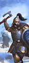
能射能打。
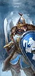
高护甲。
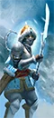
减速 + 反大型。
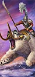
高冲锋。
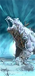
肉盾。
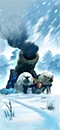
高伤害。
03 / ROSTER完整兵种表
按类别展开。T 是招募等级；兵模是单位里的模型数；远程 / 射程一栏，前者是每 10 秒全队伤害，后者是射程。名将团单独列在最后。
← 左右滑动查看完整数值 →
领主与传奇领主9 个单位
| 兵种 | T | 兵模 | 生命 | 护甲 | 领导 | 速度 | 近攻 | 近防 | 武器 | 远程 / 射程 | 维护 |
|---|---|---|---|---|---|---|---|---|---|---|---|
AtamanLord |
— | 1 | 4,068 | 95 | 70 | 34 | 40 | 60 | 380 | 375 / 90m | 250 |
Boris UrsusLord |
— | 1 | 4,672 | 85 | 80 | 34 | 50 | 55 | 430 | — | 275 |
BoyarLord |
— | 1 | 4,068 | 85 | 70 | 34 | 55 | 45 | 430 | — | 250 |
DruzhinaLord |
— | 1 | 4,268 | 65 | 70 | 34 | 50 | 40 | 445 | 500 / 180m | 225 |
Ice Witch (Ice)Wizard Lord |
— | 1 | 8,138 | 90 | 70 | 75 | 48 | 35 | 445 | — | 387 |
Ice Witch (Tempest)Wizard Lord |
— | 1 | 8,138 | 90 | 70 | 75 | 48 | 35 | 445 | — | 387 |
KostaltynLord |
— | 1 | 5,072 | 20 | 80 | 34 | 60 | 40 | 380 | — | 300 |
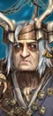 Mother OstankyaWizard Lord |
— | 1 | 5,436 | 40 | 85 | 70 | 44 | 32 | 230 | 555 / 120m | 360 |
Tzarina KatarinWizard Lord |
— | 1 | 8,362 | 90 | 80 | 75 | 48 | 35 | 445 | — | 400 |
英雄11 个单位
| 兵种 | T | 兵模 | 生命 | 护甲 | 领导 | 速度 | 近攻 | 近防 | 武器 | 远程 / 射程 | 维护 |
|---|---|---|---|---|---|---|---|---|---|---|---|
 FelixMelee Specialist |
— | 1 | 4,168 | 70 | 70 | 34 | 50 | 55 | 380 | — | — |
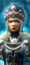 Frost Maiden (Ice)Wizard |
— | 1 | 3,420 | 15 | 60 | 46 | 35 | 30 | 285 | — | 250 |
Frost Maiden (Tempest)Wizard |
— | 1 | 3,420 | 15 | 60 | 46 | 35 | 30 | 285 | — | 250 |
 GotrekMelee Specialist |
— | 1 | 5,902 | 0 | 100 | 42 | 70 | 50 | 470 | — | — |
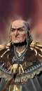 Hag Witch (Beasts)Wizard |
— | 1 | 4,640 | 30 | 75 | 70 | 36 | 28 | 300 | 325 / 100m | 250 |
 Hag Witch (Death)Wizard |
— | 1 | 4,640 | 30 | 75 | 70 | 36 | 28 | 300 | 325 / 100m | 250 |
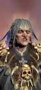 Hag Witch (Hag)Wizard |
— | 1 | 4,640 | 30 | 75 | 70 | 36 | 28 | 300 | 325 / 100m | 250 |
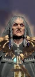 Hag Witch (Shadows)Wizard |
— | 1 | 4,640 | 30 | 75 | 70 | 36 | 28 | 300 | 325 / 100m | 250 |
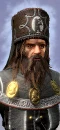 PatriarchSupport Specialist |
— | 1 | 3,420 | 20 | 70 | 34 | 35 | 30 | 360 | — | 250 |
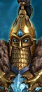 The Golden Knight Naryska LeysaMelee Specialist |
— | 1 | 4,668 | 100 | 80 | 30 | 55 | 55 | 440 | — | — |
Ulrika MagdovaHybrid Weapon Wizard |
— | 1 | 3,968 | 50 | 80 | 40 | 50 | 46 | 450 | 297 / 180m | — |
近战步兵3 个单位
| 兵种 | T | 兵模 | 生命 | 护甲 | 领导 | 速度 | 近攻 | 近防 | 武器 | 远程 / 射程 | 维护 |
|---|---|---|---|---|---|---|---|---|---|---|---|
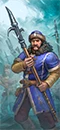 Kislevite WarriorsHalberd Infantry |
T1 | 120 | 8,400 | 30 | 60 | 33 | 23 | 36 | 25 | — | 125 |
Tzar GuardSword Infantry |
T3 | 80 | 8,800 | 90 | 75 | 30 | 36 | 50 | 42 | — | 250 |
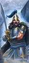 Tzar Guard (Great Weapons)Greatsword Infantry |
T3 | 80 | 8,800 | 90 | 75 | 30 | 40 | 36 | 42 | — | 275 |
远程步兵8 个单位
| 兵种 | T | 兵模 | 生命 | 护甲 | 领导 | 速度 | 近攻 | 近防 | 武器 | 远程 / 射程 | 维护 |
|---|---|---|---|---|---|---|---|---|---|---|---|
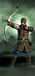 KossarsBow & Axe Infantry |
T1 | 90 | 6,390 | 15 | 60 | 33 | 28 | 26 | 28 | 17 / 140m | 113 |
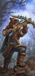 Akshina AmbushersMissile Infantry |
T2 | 90 | 6,930 | 30 | 70 | 36 | 26 | 26 | 35 | 23 / 150m | 213 |
Armoured KossarsPistol & Axe Infantry |
T2 | 100 | 8,200 | 80 | 65 | 30 | 32 | 40 | 32 | 18 / 90m | 163 |
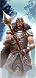 Armoured Kossars (Great Weapons)Pistol & Greatmace Infantry |
T2 | 100 | 8,200 | 80 | 65 | 30 | 34 | 34 | 36 | 18 / 90m | 175 |
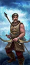 Kossars (Spears)Missile & Spear Infantry |
T2 | 90 | 6,390 | 15 | 60 | 33 | 20 | 30 | 25 | 17 / 140m | 125 |
StreltsiGun-Greataxe Infantry |
T2 | 90 | 7,470 | 70 | 70 | 30 | 32 | 26 | 34 | 17 / 145m | 213 |
Ice Guard (Glaives)Bow & Glaive Infantry |
T3 | 80 | 7,040 | 50 | 75 | 36 | 32 | 40 | 28 | 24 / 160m | 275 |
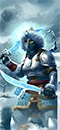 Ice Guard (Swords)Bow & Dual Sword Infantry |
T3 | 80 | 7,040 | 50 | 75 | 36 | 42 | 36 | 32 | 24 / 160m | 250 |
近战骑兵3 个单位
| 兵种 | T | 兵模 | 生命 | 护甲 | 领导 | 速度 | 近攻 | 近防 | 武器 | 远程 / 射程 | 维护 |
|---|---|---|---|---|---|---|---|---|---|---|---|
Kossovite DervishesCavalry |
T1 | 60 | 5,640 | 25 | 60 | 92 | 28 | 24 | 28 | — | 113 |
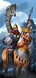 Winged LancersShock Cavalry |
T2 | 60 | 6,480 | 80 | 70 | 84 | 26 | 26 | 30 | — | 250 |
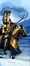 Gryphon LegionShock Cavalry |
T3 | 60 | 6,960 | 110 | 75 | 75 | 34 | 32 | 40 | — | 312 |
远程骑兵1 个单位
| 兵种 | T | 兵模 | 生命 | 护甲 | 领导 | 速度 | 近攻 | 近防 | 武器 | 远程 / 射程 | 维护 |
|---|---|---|---|---|---|---|---|---|---|---|---|
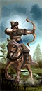 Horse ArchersMissile Cavalry |
T2 | 60 | 5,460 | 25 | 60 | 92 | 26 | 24 | 28 | 17 / 140m | 138 |
怪骑2 个单位
| 兵种 | T | 兵模 | 生命 | 护甲 | 领导 | 速度 | 近攻 | 近防 | 武器 | 远程 / 射程 | 维护 |
|---|---|---|---|---|---|---|---|---|---|---|---|
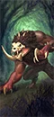 The Things in the WoodsMonstrous Beast |
T2 | 24 | 6,168 | 35 | 60 | 70 | 38 | 32 | 62 | — | 175 |
War Bear RidersMonstrous Cavalry |
T4 | 16 | 8,256 | 100 | 70 | 75 | 46 | 34 | 110 | — | 400 |
战车3 个单位
| 兵种 | T | 兵模 | 生命 | 护甲 | 领导 | 速度 | 近攻 | 近防 | 武器 | 远程 / 射程 | 维护 |
|---|---|---|---|---|---|---|---|---|---|---|---|
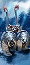 Heavy War SledsMissile Chariot |
T3 | 4 | 6,688 | 110 | 70 | 66 | 38 | 26 | 88 | 34 / 130m | 338 |
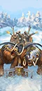 Light War SledsMissile Chariot |
T3 | 4 | 6,088 | 50 | 70 | 75 | 34 | 26 | 88 | 34 / 130m | 275 |
Little GromSiege Artillery |
T3 | 1 | 5,228 | 105 | 70 | 35 | 40 | 28 | 110 | 543 / 420m | 350 |
巨兽4 个单位
| 兵种 | T | 兵模 | 生命 | 护甲 | 领导 | 速度 | 近攻 | 近防 | 武器 | 远程 / 射程 | 维护 |
|---|---|---|---|---|---|---|---|---|---|---|---|
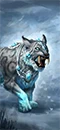 Snow LeopardWar Beast |
T2 | 1 | 3,180 | 20 | 60 | 100 | 50 | 38 | 290 | — | 163 |
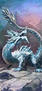 Frost WyrmMonster |
T3 | 1 | 7,980 | 90 | 65 | 75 | 48 | 35 | 445 | — | 362 |
Elemental BearMonster |
T4 | 1 | 10,988 | 90 | 90 | 48 | 50 | 34 | 600 | — | 450 |
 Incarnate Elemental of BeastsMonster |
T5 | 1 | 9,008 | 50 | 80 | 60 | 62 | 30 | 650 | — | 450 |
名将团7 个单位
| 兵种 | T | 兵模 | 生命 | 护甲 | 领导 | 速度 | 近攻 | 近防 | 武器 | 远程 / 射程 | 维护 |
|---|---|---|---|---|---|---|---|---|---|---|---|
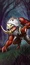 The Mordheim Balewolves (The Things in the Woods)Monstrous Beast · Renown |
T2 | 24 | 6,552 | 35 | 70 | 70 | 48 | 41 | 62 | — | 238 |
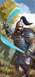 The Watchmen in the Night (Armoured Kossars)Sword Infantry · Renown |
T2 | 100 | 8,200 | 80 | 75 | 30 | 41 | 40 | 48 | — | 238 |
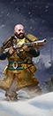 Boydinov's Brawlers (Streltsi)Gun-Greataxe Infantry · Renown |
T3 | 90 | 7,470 | 70 | 80 | 30 | 45 | 38 | 34 | 49 / 90m | 288 |
Dazh's Hearth-Blades (Tzar Guard – Great Weapons)Greatsword Infantry · Renown |
T3 | 80 | 8,800 | 90 | 85 | 30 | 50 | 45 | 42 | — | 350 |
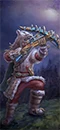 The Wolfhearts (Akshina Ambushers)Missile Infantry · Renown |
T3 | 90 | 6,930 | 30 | 80 | 36 | 34 | 34 | 35 | 27 / 150m | 288 |
Oath-Brothers of Tor (War Bear Riders)Monstrous Cavalry · Renown |
T4 | 16 | 8,256 | 100 | 80 | 75 | 57 | 43 | 110 | — | 450 |
The Frozen Heart of Winter (Elemental Bear)Monster · Renown |
T5 | 1 | 10,988 | 90 | 100 | 48 | 61 | 43 | 600 | — | 550 |
已排除“扩展名册（extended roster）”单位。数值为 Patch 9.0.4；不同版本可能微调。
04 / ARMY BUILD配兵思路
先按角色填槽，再按对手换兵。下面是一个通用的 20 槽骨架，以及用本页推荐兵种拼出的示例。
| 角色 | 建议槽位 | 说明 |
|---|---|---|
| 扛线 | 5–6 | 持盾 / 重甲步兵，任务是站住，不是杀敌。 |
| 远程 | 3–5 | 弓箭、火枪或炮兵；至少 2 队能打重甲。 |
| 机动 | 3–4 | 骑兵、战车、飞行单位；包抄、背冲、追逃。 |
| 巨兽 / 炮兵 | 1–3 | 破阵、斩将、攻城；别孤军深入。 |
| 英雄 | 1–3 | 法师 + 支援英雄，嵌入主力。 |
示例：4× 沙皇禁卫 + 4× 重甲哥萨克 + 3× 战争熊骑兵 + 2× 元素熊 + 领主 + 1 英雄，余下 3–4 槽按对手补破甲 / 反大型 / 炮兵。
重甲多带破甲（火枪、大炮、巨斧）；巨兽多带反大型（长戟、弩炮）；鼠人 / 绿皮多带范围伤害（吹息、炮兵、火焰）；骑兵多留 2 队长戟或反大型。不要一套配兵打到底。